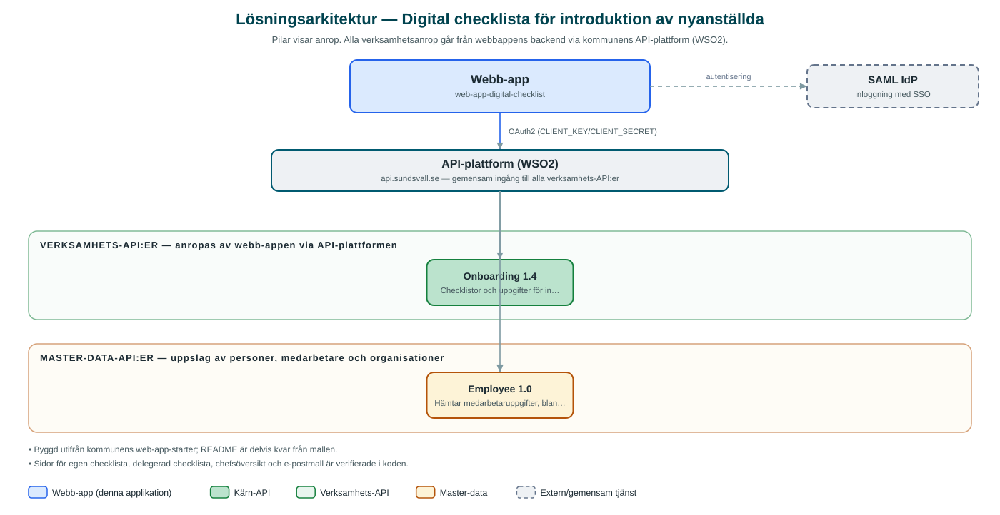

Digital checklista för introduktion av nyanställda
Digital checklista som guidar chefer och nyanställda genom introduktionsprocessen, med översikt över hur långt varje introduktion kommit.
Om applikationen
Tjänsten digitaliserar kommunens introduktion av nyanställda. Både chefen och den nyanställda får varsin checklista med aktiviteter att bocka av under introduktionen, och uppgifter kan även delegeras till en annan ansvarig person.
Chefer får en samlad översikt över nyanställda i den egna organisationen med hur långt både chefens och medarbetarens delar av introduktionen har kommit. Uppgifter kan läggas till och uppdateras löpande, och tjänsten innehåller även en e-postmall för utskick kopplade till introduktionen.
Medarbetare loggar in med kommunens gemensamma inloggning, och medarbetaruppgifter som namn och foto hämtas från kommunens personalsystem via interna API:er.
Det här stödjer applikationen
- Checklista för nyanställd – Den nyanställda ser och bockar av sina introduktionsaktiviteter.
- Checklista för chef – Chefen har en egen lista med aktiviteter inför och under introduktionen.
- Delegering – Ansvar för en checklista kan delegeras till annan medarbetare.
- Chefsöversikt – Samlad vy över alla nyanställda i organisationen med progress för chef respektive anställd.
- Uppgiftshantering – Uppgifter kan skapas, uppdateras och massuppdateras i checklistorna.
Teknisk dokumentation
Nedan beskrivs hur applikationen är uppbyggd, vilka API:er den använder och vad som krävs för att driftsätta den. Informationen är härledd ur källkoden och dess konfiguration på GitHub.
Arkitektur

Applikationen består av en webbaserad frontend (Next.js/React med sk-web-gui) och en backend (Node.js/Express med routing-controllers och Passport-SAML) som utvecklas i samma kodbas. Verksamhetsanrop går via kommunens gemensamma API-plattform (WSO2) – frontend pratar aldrig direkt med underliggande system. Inloggning: SAML (SSO). Övriga integrationer som förekommer i koden: SAML IdP, WSO2 API-gateway.
Teknikstack
- Frontend: Next.js/React med sk-web-gui
- Backend: Node.js/Express med routing-controllers och Passport-SAML
- Test: Jest (backend); Cypress i frontend
API-beroenden
Applikationen konsumerar följande API:er via kommunens API-plattform. Versionerna är hämtade ur källkodens API-konfiguration.
| API | Version | Användning |
|---|---|---|
| Onboarding | 1.4 | Checklistor och uppgifter för introduktionen – hämtning, skapande och uppdatering. |
| Employee | 1.0 | Hämtar medarbetaruppgifter, bland annat personbild. |
Konfiguration och driftsättning
- .env-filer för frontend och backend utifrån .env-exempel
- CLIENT_KEY/CLIENT_SECRET mot kommunens API-gateway (api-i-test.sundsvall.se i exempel)
- SAML-certifikat och callback-/redirect-adresser
- SECRET_KEY för sessionskryptering, CORS-origin
Noterbart ur källkoden
- Byggd utifrån kommunens web-app-starter; README är delvis kvar från mallen.
- Sidor för egen checklista, delegerad checklista, chefsöversikt och e-postmall är verifierade i koden.
Källkod
Källkoden är öppen och finns hos Sundsvalls kommun på GitHub. I källkodsförrådet finns även instruktioner för att klona, konfigurera och starta applikationen i egen miljö.